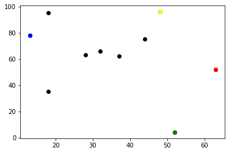

Your ABM code should look something like the following:
import random
import math
import matplotlib
from matplotlib import pyplot as plt
import operator
# Set the pseudo-random seed for reproducibility
random.seed(0)
# A variable to store the number of agents
n_agents = 10
# Initialise agents
agents = []
for i in range(n_agents):
agents.append([random.randint(0, 99), random.randint(0, 99)])
print(agents)
# Move agents
for i in range(n_agents):
# Change agents[i] coordinates randomly
# x-coordinate
rn = random.random()
#print("rn", rn)
if rn < 0.5:
agents[i][0] = agents[i][0] + 1
else:
agents[i][0] = agents[i][0] - 1
# y-coordinate
rn = random.random()
#print("rn", rn)
if rn < 0.5:
agents[i][1] = agents[i][1] + 1
else:
agents[i][1] = agents[i][1] - 1
print(agents)
# Calculate the Euclidean distance between (x0, y0) and (x1, y1)
# Set x0 and y0 to equal 0, x1 to equal 3, and y1 to equal 4
x0 = 0
y0 = 0
x1 = 3
y1 = 4
# Calculate the difference in the x coordinates.
diff_x = x0 - x1
# Calculate the difference in the y coordinates.
diff_y = y0 - y1
# Square the differences and add the squares
ssd = (diff_x * diff_x) + (diff_y * diff_y)
print("ssd", ssd)
# Calculate the square root
distance = ssd ** 0.5
print("distance", distance)
distance = math.sqrt(ssd)
print("distance", distance)
# Plot
for i in range(n_agents):
plt.scatter(agents[i][0], agents[i][1], color='black')
# Plot the coordinate with the largest x red
lx = max(agents, key=operator.itemgetter(0))
plt.scatter(lx[0], lx[1], color='red')
# Plot the coordinate with the smallest x blue
sx = min(agents, key=operator.itemgetter(0))
plt.scatter(sx[0], sx[1], color='blue')
# Plot the coordinate with the largest y yellow
ly = max(agents, key=operator.itemgetter(1))
plt.scatter(ly[0], ly[1], color='yellow')
# Plot the coordinate with the smallest y green
sy = min(agents, key=operator.itemgetter(1))
plt.scatter(sy[0], sy[1], color='green')
plt.show()When run, this code should produce the following text output:
[[49, 97], [53, 5], [33, 65], [62, 51], [38, 61], [45, 74], [27, 64], [17, 36], [17, 96], [12, 79]] [[48, 96], [52, 4], [32, 66], [63, 52], [37, 62], [44, 75], [28, 63], [18, 35], [18, 95], [13, 78]] ssd 25 distance 5.0 distance 5.0
And the following image:
Some of the print statements have been commented out to reduce the amount of text output. What is output is helpful in showing that the agents have moved. It would be easier to interpret the program output if there was a bit more information printed out.
Before initialising the agents define a function to calculate the distance: Use the def keyword and an appropriate name, and specify four input parameters (x0, y0, x1, y1), use the approriate punctiation to end the function definition. Move in the code logic that calculates the distance. At the end of the function instead of printing out the distance, add a return statement to return it. Make sure your function code is indented correctly. After the end of the function write a statement to call the function and print out the result. Simplify the code by removing one of the ways the square root is calculated and in other ways you would like. Next, change the comment into a docstring and clarify what the inputs and outputs are for the function.
The function should appear as follows: